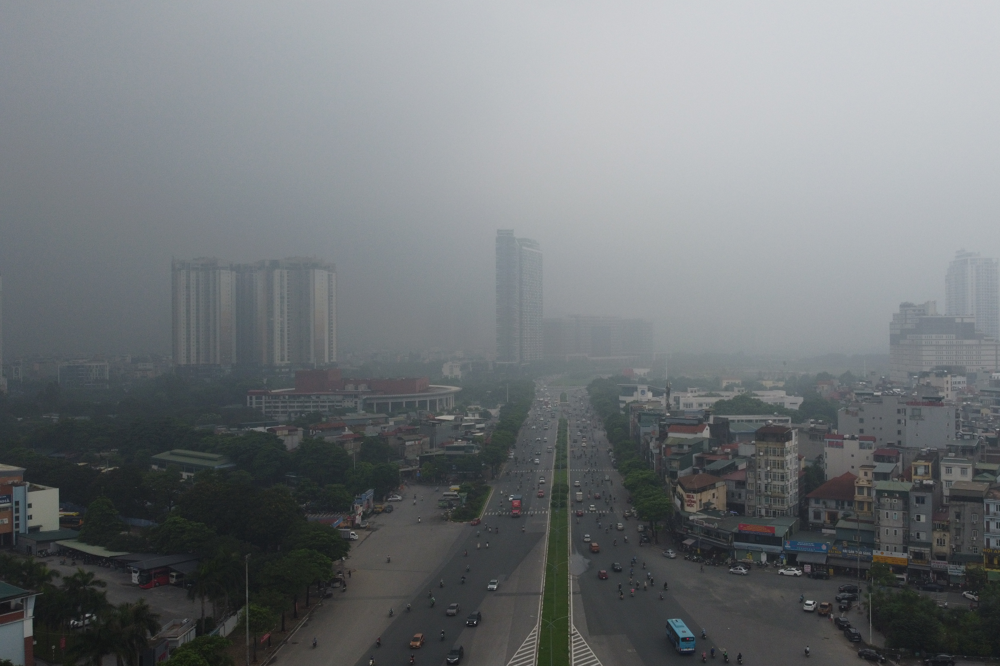

Hà Nội: Sương mù dày đặc "nuốt chửng" nhà cao tầng, giao thông khó khăn
Thứ năm, 6/8/2022, 06:00 (GMT+7)
Sáng sớm nay, sương mù bất ngờ sà xuống bao trùm toàn TP. Hà Nội khiến các tòa nhà cao tầng "biến mất", các phương tiện giao thông di chuyển khó khăn, nhiều chủ phương tiện phải bật đèn sương mù hoặc đèn chiếu gần để đảm bảo an toàn. Từ khoảng 6 giờ đến hơn 9 giờ sáng ngày 2/12 hiện tượng sương mù dày đặc bất ngờ bủa vây toàn TP. Hà Nội. Thời điểm sương mù bao phủ cũng là lúc hàng triệu người dân đổ ra đường đi làm nên hiện tượng này đã gây không ít trở ngại cho người dân. Ghi nhận nhanh của chúng tôi, sương mù xuất hiện nhiều và đậm nhất vào lúc 8 giờ sáng. Các tòa nhà cao tầng như Keangnam, Lotte Đào Tấn hay nhiều chung cư cao tầng tại Nguyễn Xiển, Linh Đàm bị "biến mất" trong làn sương mờ ảo. Nếu đứng cách xa các tòa nhà này khoảng 200 mét dường như không thể quan sát những tầng trên cao (từ tầng 10 trở lên).
Tại nhiều nút giao thông như: Nguyễn Xiển - Nguyễn Trãi, Nguyễn Chí Thanh - Kim Mã, Phạm Hùng - Dương Đình Nghệ... đều xảy ra hiện tượng các phương tiện giao thông di chuyển khó khăn, thậm chí đèn tín hiệu giao thông cũng bị sương mù che phủ một phần. Trên các tuyến đường như: Đại Lộ Thăng Long, Phạm Hùng, Dương Đình Nghệ, Nguyễn Trãi... các phương tiện giao thông như ô tô và xe máy phải bật đèn sương mù hoặc đèn chiếu sáng gần. Trao đổi nhanh với chúng tôi, chị Nguyễn Thu Trang (nhân viên bất động sản) cho biết: "Sáng nay em di chuyển từ Hà Đông lên qua đường Tố Hữu thế nhưng sương mù dày đặc khiến em phải bật đèn sương mù để di chuyển, nhiều phương tiện khác cũng phải bật đèn như em. Thậm chí một số nút giao nhau, các phương tiện xảy ra ùn ứ nhẹ do sương mù". T heo đó, đây là đợt sương mù đầu tiên của năm nay. Sáng ngày 3/12, Hà Nội sẽ bước vào đợt rét đậm, nhiệt độ hạ thấp ở ngưỡng 15 độ C.
Giới thiệu
Tell Ur Mom II - Winno ft. Heily「Cukak Remix」/ Audio Lyrics Video
Follow Me

Liên hệ
Điện thoại: 0987654321
Email: web1013@dinhnt.com